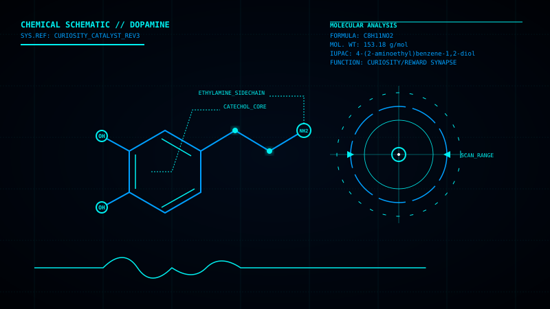

CÔ ĐƠN
Cảm giác xa cách mặc dù ở giữa đám đông
Những dấu hiệu bạn đang cảm thấy cô đơn

Ngay cả khi ở xung quanh những người khác
Khó chia sẻ những gì mình cảm thấy
Không biết cách kết nối với người khác
Ngày dường như lặp lại vô tận
Không cảm thấy được thấu hiểu
Có cảm giác không thuộc về nơi nào

Hiểu về cảm xúc cô đơn
Cô đơn không phải chỉ là việc không có ai ở bên cạnh. Đó là cảm giác trống rỗng ngay cả khi bạn ở giữa đám đông, cảm giác mà chẳng ai hiểu được bạn thực sự là ai.
Giống như Mercury quay quanh Mặt Trời trong bóng tối — luôn chuyển động nhưng luôn cô đơn. Hành tinh này gần như không có bầu khí quyển để giữ ấm, không có vệ tinh, chỉ có bề mặt khô cằn và bầu không gian lạnh lẽo.
Cô đơn có thể là kết quả của:
Những con số về cô đơn toàn cầu

Mọi người từng cảm thấy cô đơn
Không muốn chia sẻ với ai
Ảnh hưởng sức khỏe tâm thần
Cảm thấy tốt hơn sau khi nói chuyện
Những suy nghĩ bạn chẳng nên tự tin

Tìm hiểu gốc rễ của cảm xúc này

Mất kết nối với bạn bè, gia đình hoặc cộng đồng. Có thể do chuyển nhà, thay đổi công việc, hoặc tự rút mình khỏi xã hội.
Cảm giác bị hiểu lầm, không thể chia sẻ thực sự là bạn. Sự khác biệt trong giá trị hoặc đam mê.
Nỗi sợ hãi này ngăn cản bạn mở lòng và kết nối với những người khác, tạo thành một vòng luẩn quẩn.
Trầm cảm, lo âu, hoặc những điều kiện khác có thể làm tăng cảm giác cô đơn.
Mặc dù có nhiều kết nối online nhưng vẫn cảm thấy cô đơn về cảm xúc. Mối quan hệ qua màn hình không đủ sâu.
Cô đơn ảnh hưởng như thế nào?
Tăng nguy cơ trầm cảm, lo âu, và các vấn đề sức khỏe tâm thần khác.
Cô đơn kéo dài có thể yếu miễn dịch, tăng huyết áp, và các vấn đề sức khỏe khác.
Khó tập trung vào công việc học tập khi tâm trí bị chia sẻ bởi cảm xúc tiêu cực.
Cô đơn dẫn đến tự cô lập, làm tăng cảm giác cô đơn, tạo thành một vòng tròn khó thoát.
Cách để vượt qua cảm xúc cô đơn

Hãy tin tưởng ít nhất một người. Chia sẻ những gì bạn cảm thấy với ai đó bạn tin tưởng. Sự thấu hiểu từ một người cũng đủ để chữa lành.
Tham gia các nhóm, câu lạc bộ hoặc các hoạt động mà bạn yêu thích. Những người chia sẻ đam mê của bạn sẽ dễ hiểu hơn.
Thiền định, tập thể dục, hoặc làm những thứ bạn yêu thích. Tình yêu bản thân là bước đầu tiên để kết nối với người khác.
Nếu cảm xúc quá nặng nề, hãy tìm một nhà tâm lý sư hoặc bác sĩ. Không có gì xấu hổ khi cần giúp đỡ chuyên nghiệp.

Những bước nhỏ để thay đổi lớn
0/5 hoàn thành
Luôn có ai đó lắng nghe
Mỗi cảm xúc đều có câu chuyện riêng